Trải qua từng thời kỳ, phong cách kiến trúc nổi bật luôn là sự kết tinh của nghệ thuật, văn hóa và xu hướng thời đại. Từ sự tinh xảo của kiến trúc Tân cổ điển, sự phóng khoáng của Hiện đại đến vẻ đẹp tinh gọn của Tối giản – mỗi phong cách đều tạo nên dấu ấn riêng biệt. Hãy cùng AVA Architects tìm hiểu 9 phong cách kiến trúc được ứng dụng nhiều nhất hiện nay!
Phong cách kiến trúc là gì?
Phong cách kiến trúc là tập hợp các đặc điểm về thiết kế, hình thức, vật liệu và bố cục không gian được áp dụng trong xây dựng để tạo nên một công trình có bản sắc riêng. Mỗi phong cách mang trong mình những quy tắc và đặc trưng riêng, phản ánh tư duy thẩm mỹ, văn hóa và nhu cầu sử dụng của từng thời kỳ, khu vực hoặc nhóm người. Kiến trúc không chỉ đơn thuần là việc xây dựng mà còn là nghệ thuật thể hiện sự sáng tạo và bản sắc của một nền văn minh.
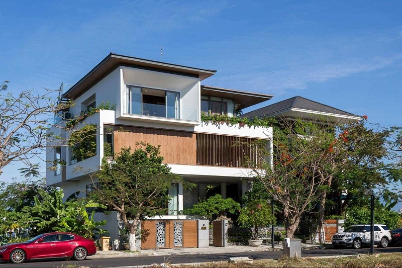
Phong cách kiến trúc là yếu tố quan trọng để công trình mang bản sắc riêng (C: The Riverside House – AVA Architects)
Từ những công trình mang đậm nét hoài cổ đến những thiết kế mang hơi thở hiện đại, mỗi phong cách đều có giá trị riêng và đáp ứng các yêu cầu khác nhau về công năng, thẩm mỹ cũng như sự phù hợp với môi trường sống. Sự phát triển của kiến trúc không ngừng biến đổi theo thời gian, kế thừa tinh hoa của quá khứ và kết hợp những xu hướng mới để tạo ra những không gian sống tiện nghi, hài hòa và đầy cảm hứng.
Vì sao phong cách kiến trúc quan trọng?
Phong cách kiến trúc đóng vai trò quan trọng không chỉ trong việc định hình thẩm mỹ của một công trình mà còn ảnh hưởng đến công năng, trải nghiệm không gian và giá trị văn hóa. Trước hết, phong cách kiến trúc giúp tạo nên dấu ấn riêng biệt, phản ánh cá tính, sở thích và gu thẩm mỹ của gia chủ. Một công trình có phong cách rõ ràng sẽ mang đến sự hài hòa về màu sắc, hình khối và bố cục, giúp không gian trở nên cân đối, đẹp mắt và có chiều sâu.
Bên cạnh đó, phong cách kiến trúc còn quyết định đến công năng và sự tiện nghi trong sử dụng. Mỗi phong cách đều có cách bố trí không gian, lựa chọn vật liệu và xử lý ánh sáng khác nhau để phù hợp với khí hậu, văn hóa và nhu cầu sống của từng gia đình. Ví dụ, những công trình ở vùng nhiệt đới thường ưu tiên phong cách kiến trúc có nhiều cửa sổ, thông gió tự nhiên để đảm bảo sự thoáng mát.
Dinh thự mang phong cách kiến trúc Cổ điển (C: Minh Phuong Villa – AVA Architects)
Ngoài ra, phong cách kiến trúc còn mang ý nghĩa lịch sử và văn hóa sâu sắc. Nó là sự phản ánh của thời đại, của những biến động về xã hội, kinh tế và nghệ thuật. Những công trình mang phong cách kiến trúc đặc trưng không chỉ là nơi ở, nơi làm việc mà còn là những biểu tượng văn hóa, lưu giữ giá trị truyền thống và tinh thần của một dân tộc. Việc lựa chọn phong cách kiến trúc phù hợp không chỉ giúp tối ưu không gian sống mà còn góp phần bảo tồn và phát triển bản sắc kiến trúc địa phương, tạo nên những công trình có giá trị lâu dài theo thời gian.
Top 9 phong cách kiến trúc phổ biến tại Việt Nam
Phong cách kiến trúc Cổ điển (Classical Architecture)
Phong cách kiến trúc Cổ điển (Classical Architecture) có nguồn gốc từ nền văn minh Hy Lạp và La Mã cổ đại, sau đó phát triển mạnh mẽ ở châu Âu vào thế kỷ 17-19. Đây là phong cách mang đậm tính đối xứng, tôn vinh sự cân bằng, sang trọng và tinh tế. Đến nay, kiến trúc Cổ điển vẫn giữ được vị thế riêng, trở thành biểu tượng của sự quyền quý và đẳng cấp.
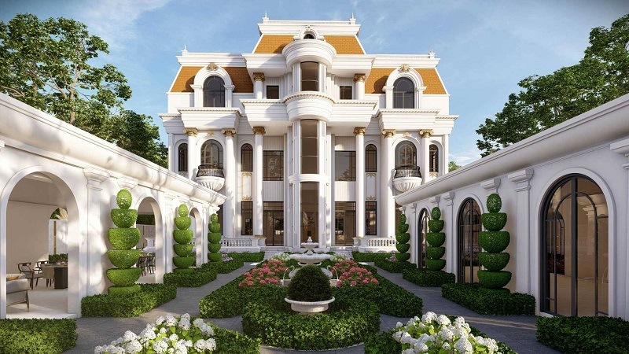
Phong cách Cổ điển gây ấn tượng bởi sự bề thế, sang trọng và đẳng cấp (C: Minh Phuong Villa – AVA Architects)
Những đặc điểm của phong cách Cổ điển:
- Tính đối xứng và cân bằng: Kiến trúc Cổ điển đề cao sự đối xứng trong thiết kế. Các công trình thường có bố cục chặt chẽ, với phần trung tâm làm điểm nhấn, hai bên là những chi tiết cân đối.
- Hệ cột bề thế, chi tiết hoa văn cầu kỳ: Những công trình theo phong cách Cổ điển thường có hệ cột lớn, được lấy cảm hứng từ kiến trúc La Mã và Hy Lạp, bao gồm ba loại cột chính: Doric, Iconic, Corinthian. Ngoài hệ cột, kiến trúc Cổ điển còn nổi bật với các chi tiết chạm khắc tinh xảo như phù điêu, phào chỉ và hoa văn uốn lượn, mang đến vẻ đẹp tráng lệ.
- Màu sắc trang trọng: Gam màu chủ đạo trong phong cách Cổ điển thường là những tông màu trầm ấm như vàng kim, trắng, be, xám và nâu.
- Chất liệu cao cấp: Các công trình Cổ điển thường sử dụng các vật liệu cao cấp như đá cẩm thạch, gỗ tự nhiên, thạch cao và kim loại mạ vàng. Những chất liệu này không chỉ đảm bảo độ bền mà còn mang lại cảm giác sang trọng, quyền quý.
- Hệ mái vòm và cửa sổ lớn: Một trong những đặc điểm nổi bật của phong cách này là mái vòm cong tinh tế, giúp công trình trở nên uy nghi hơn. Các cửa sổ lớn được thiết kế với kính và khung gỗ, tạo nên không gian thoáng đãng nhưng vẫn giữ được nét cổ kính.
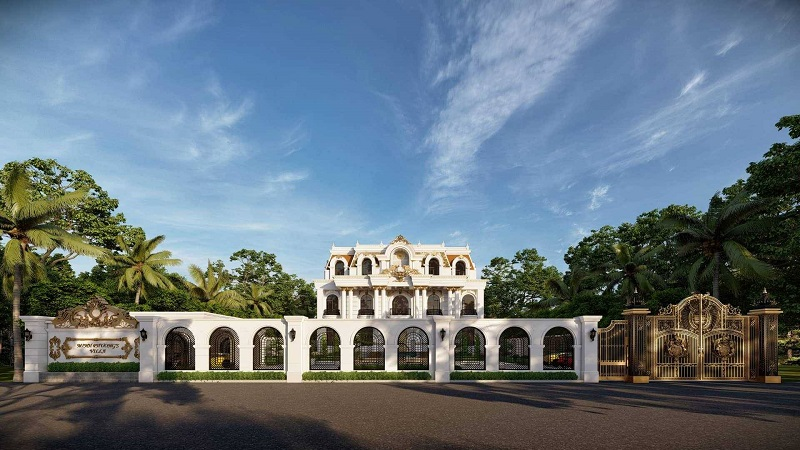
Dinh thự với phong cách kiến trúc Cổ điển rộng lớn, hài hòa với thiên nhiên (C: Minh Phuong Villa – AVA Architects)
Ngày nay, phong cách kiến trúc cổ điển vẫn được nhiều người ưa chuộng, đặc biệt là trong các biệt thự, lâu đài, khách sạn cao cấp hoặc công trình mang tính biểu tượng. Dù thời gian có trôi qua, kiến trúc cổ điển vẫn giữ nguyên sức hút của nó nhờ vào sự hoàn mỹ trong thiết kế và giá trị nghệ thuật trường tồn.
Phong cách kiến trúc Tân cổ điển
Phong cách kiến trúc Tân cổ điển ra đời vào khoảng thế kỷ 18, như một sự cách tân từ kiến trúc Cổ điển, giữ lại vẻ đẹp sang trọng nhưng tiết chế các chi tiết cầu kỳ để tạo nên không gian tinh tế và thanh lịch hơn. Đây là phong cách mang đến sự cân bằng giữa truyền thống và hiện đại, phù hợp với những ai yêu thích sự sang trọng nhưng không muốn sự rườm rà, nặng nề.
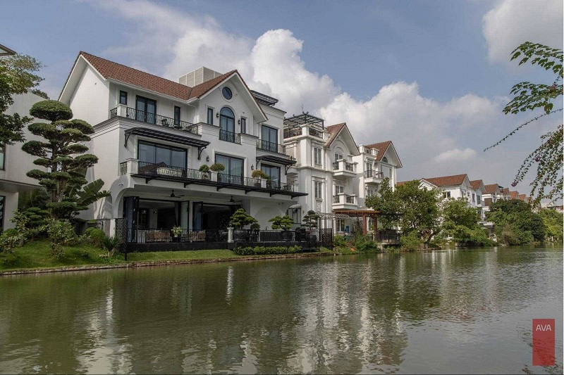
Ngôi biệt thự theo phong cách Tân cổ điển được thiết kế bởi AVA Architects (C: River Pearl – Vinhome Riverside – AVA Architects)
Những đặc điểm của phong cách Tân cổ điển:
- Bố cục đối xứng: Phong cách Tân cổ điển chú trọng đến sự đối xứng trong bố cục tổng thể. Tuy nhiên, thay vì sử dụng quá nhiều họa tiết trang trí phức tạp, phong cách này hướng đến sự đơn giản, tinh tế với những đường nét mềm mại và thanh thoát hơn.
- Cột trụ và phào chỉ nhẹ nhàng: Các công trình Tân cổ điển thường sử dụng những cột trụ với hoa văn nhẹ nhàng, không quá cầu kỳ. Các đường phào chỉ trên tường, trần nhà được thiết kế tinh giản nhưng vẫn đủ để tạo điểm nhấn sang trọng.
- Bảng màu trang nhã: Tông màu chủ đạo trong kiến trúc Tân cổ điển thường là những gam màu trung tính như trắng, kem, be, xám hoặc vàng nhạt. Những màu sắc này giúp không gian trở nên thanh lịch, trang nhã và dễ dàng kết hợp với nội thất hiện đại.
- Sử dụng chất liệu cao cấp: Gỗ tự nhiên, đá cẩm thạch, kim loại mạ vàng và kính là những vật liệu thường thấy trong phong cách này. Những chất liệu này không chỉ giúp không gian trở nên sang trọng mà còn tăng độ bền, giữ được vẻ đẹp theo thời gian.
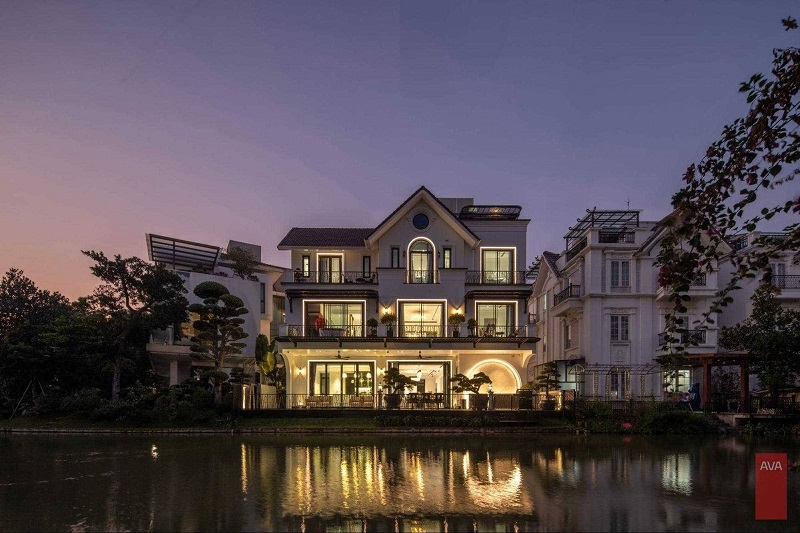
Điểm nổi bật của phong cách này là mang đến cảm giác sang trọng nhưng vẫn nhẹ nhàng, tinh tế (C: River Pearl – Vinhome Riverside – AVA Architects)
Ngày nay, phong cách Tân cổ điển được ứng dụng rộng rãi trong các công trình như biệt thự, khách sạn, nhà phố cao cấp và các công trình thương mại. Sự kết hợp hài hòa giữa nét đẹp cổ điển và sự tối giản hiện đại giúp phong cách Tân cổ điển luôn giữ được sức hút mạnh mẽ. Đây chính là lựa chọn lý tưởng cho những ai mong muốn một không gian sang trọng nhưng không quá xa hoa, cầu kỳ.
Phong cách kiến trúc Hiện đại
Phong cách kiến trúc Hiện đại ra đời vào cuối thế kỷ 19, đầu thế kỷ 20, đánh dấu một cuộc cách mạng trong tư duy thiết kế. Khác với kiến trúc Cổ điển hay Tân cổ điển đề cao sự đối xứng và hoa văn trang trí cầu kỳ, phong cách Hiện đại tập trung vào sự đơn giản, tối ưu công năng và loại bỏ những chi tiết rườm rà. Đây là phong cách phù hợp với nhịp sống đô thị hiện đại, mang lại không gian sống tinh tế, tiện nghi và tối ưu hóa trải nghiệm người dùng.
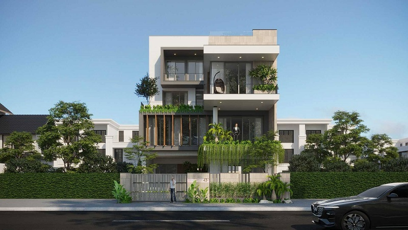
Phong cách kiến trúc Hiện đại mang đến sự mới mẻ, phóng khoáng (C: Binh Villa – AVA Architects)
Những đặc điểm của phong cách Hiện đại:
- Đường nét đơn giản, phi đối xứng: Kiến trúc Hiện đại chuộng các đường nét mạnh mẽ, dứt khoát và mang tính tự do. Hình khối kiến trúc thường vuông vức, gọn gàng với các mảng tường lớn, tạo cảm giác rộng rãi và thoáng đãng.
- Ưu tiên không gian mở: Phong cách kiến trúc này thường thiết kế không gian mở, giúp tăng tính kết nối và tối ưu ánh sáng tự nhiên. Các vách kính lớn được sử dụng phổ biến để mở rộng tầm nhìn, đưa thiên nhiên vào không gian sống, tạo cảm giác gần gũi và thư giãn.
- Sử dụng vật liệu công nghiệp: Kiến trúc Hiện đại tận dụng các vật liệu công nghiệp như bê tông, kính, thép và nhôm. Những vật liệu này không chỉ giúp công trình bền vững hơn mà còn tạo nên vẻ đẹp khỏe khoắn, hiện đại.
- Sử dụng bảng màu trung tính: Tông màu chủ đạo thường là những gam màu trung tính như trắng, xám, đen hoặc be. Tuy nhiên, để tạo điểm nhấn, đôi khi có thể kết hợp với những màu sắc táo bạo hoặc vật liệu có bề mặt độc đáo như gỗ, kim loại hay kính.
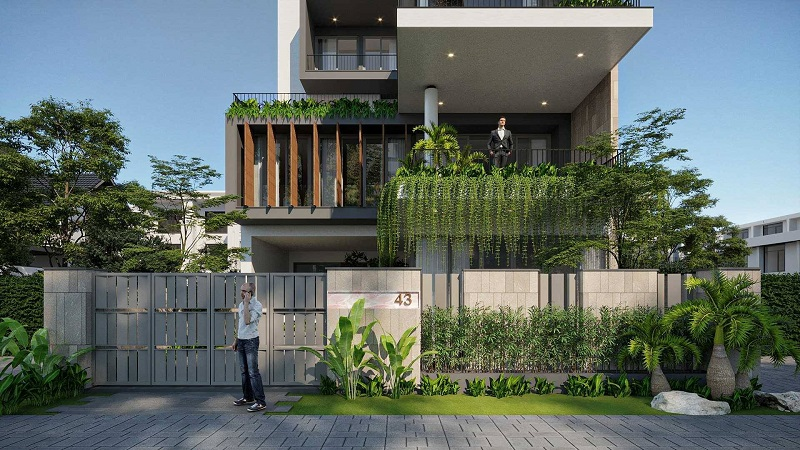
Mẫu nhà kết hợp với cây xanh gần gũi với thiên nhiên (C: Binh Villa – AVA Architects)
Phong cách Hiện đại được ứng dụng rộng rãi trong nhiều loại công trình khác nhau, từ nhà ở, biệt thự, chung cư cho đến các tòa nhà văn phòng, trung tâm thương mại và khách sạn. Nhờ sự tối giản, linh hoạt và phù hợp với xu hướng sống tiện nghi, đây là phong cách được ưa chuộng nhất trong thời đại ngày nay.
Phong cách kiến trúc Hậu hiện đại (Postmodernism)
Phong cách kiến trúc Hậu hiện đại (Postmodernism) xuất hiện vào cuối thế kỷ 20 như một phản ứng với sự cứng nhắc và tối giản của kiến trúc Hiện đại. Thay vì tuân theo những nguyên tắc thiết kế nghiêm ngặt, phong cách này mang đến sự tự do, pha trộn giữa nhiều yếu tố kiến trúc khác nhau, tạo nên những công trình độc đáo, sáng tạo và đầy cá tính.
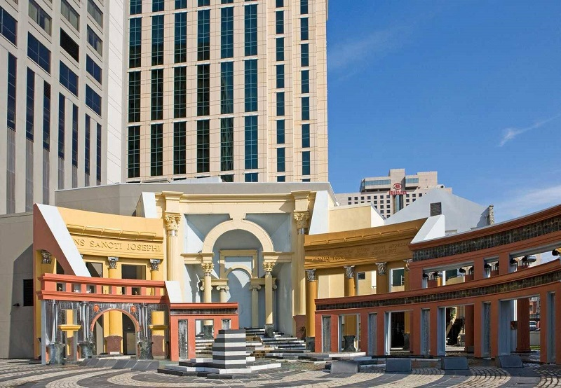
Phong cách Hậu hiện đại mang vẻ đẹp đầy sáng tạo (C: Internet)
Những đặc điểm của phong cách Hậu hiện đại
- Pha trộn giữa truyền thống và hiện đại: Không giống như kiến trúc Hiện đại vốn đơn giản và đề cao công năng, kiến trúc Hậu hiện đại không ngại kết hợp giữa các phong cách khác nhau, từ cổ điển đến đương đại, từ phương Đông đến phương Tây. Điều này tạo ra sự phá cách đầy thú vị trong thiết kế.
- Hình khối đa dạng, phi đối xứng: Một trong những đặc điểm nổi bật của phong cách này là sự tự do trong hình khối. Các công trình Hậu hiện đại thường không tuân theo bố cục đối xứng mà có những đường nét uốn lượn, góc cạnh bất ngờ hoặc kết cấu phi truyền thống, mang lại cảm giác độc đáo và sáng tạo.
- Màu sắc đa dạng, táo bạo: Kiến trúc Hậu hiện đại không giới hạn trong những gam màu trung tính mà ưa chuộng sự phối hợp màu sắc rực rỡ, thậm chí đối lập nhau để tạo điểm nhấn. Các công trình có thể sử dụng nhiều màu sắc tươi sáng như đỏ, vàng, xanh hoặc các gam màu pastel để tăng tính nghệ thuật.
- Sử dụng nhiều loại vật liệu khác nhau: Phong cách này không giới hạn trong một loại vật liệu nhất định mà kết hợp nhiều chất liệu như bê tông, kính, kim loại, gạch, gỗ và thậm chí là các vật liệu tái chế. Điều này giúp tạo ra những không gian vừa có nét hoài cổ, vừa có chất hiện đại và sáng tạo.
- Trang trí ấn tượng, mang tính biểu tượng: Kiến trúc Hậu hiện đại thường có những chi tiết trang trí độc đáo, mang tính biểu tượng cao. Đó có thể là những mái vòm cách điệu, họa tiết nghệ thuật hoặc các yếu tố trang trí không theo quy tắc nào, tạo nên sự ấn tượng và thu hút thị giác.
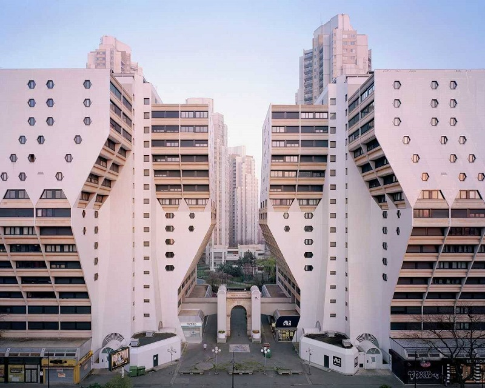
Việc sử dụng các hình khối phi đối xứng giúp phong cách kiến trúc này mang vẻ đẹp cực kỳ cá tính (C: Internet)
Với tính linh hoạt và sáng tạo, phong cách Hậu hiện đại được áp dụng rộng rãi trong các công trình công cộng, trung tâm thương mại, bảo tàng, rạp chiếu phim và thậm chí cả nhà ở. Nó đặc biệt phù hợp với những ai yêu thích sự khác biệt, không muốn bị ràng buộc bởi các quy tắc cứng nhắc trong thiết kế.
Phong cách kiến trúc Bắc Âu (Scandinavian)
Phong cách kiến trúc Bắc Âu có nguồn gốc từ các nước Bắc Âu như Thụy Điển, Na Uy, Đan Mạch và Phần Lan. Đây là phong cách đề cao sự tối giản, hài hòa với thiên nhiên và tạo ra không gian sống ấm cúng, thoải mái nhưng vẫn đầy tính thẩm mỹ. Với đặc trưng là gam màu trung tính, vật liệu tự nhiên và thiết kế tinh giản, phong cách này ngày càng được ưa chuộng trên toàn thế giới, đặc biệt là trong các căn hộ và nhà phố hiện đại.
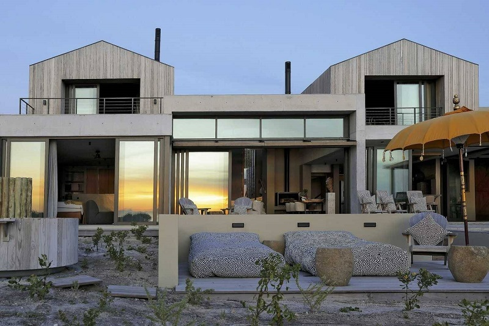
Phong cách kiến trúc Bắc Âu tạo ra không gian sống ấm cúng (C: Internet)
Những đặc điểm của phong cách Bắc Âu:
- Đề cao sự tối giản và công năng sử dụng: Phong cách Bắc Âu chú trọng vào sự đơn giản, gọn gàng và tiện dụng. Các công trình mang phong cách này thường có thiết kế vuông vức, ít chi tiết cầu kỳ nhưng vẫn đảm bảo tính thẩm mỹ và sự tiện nghi. Kiến trúc sư tập trung vào việc tối ưu hóa không gian, giúp căn nhà trở nên rộng rãi và thoáng đãng hơn.
- Sử dụng gam màu trung tính, nhẹ nhàng: Màu sắc chủ đạo trong kiến trúc này là những gam màu trung tính như trắng, xám, be và kem. Những tông màu này không chỉ giúp không gian trông rộng hơn mà còn tạo cảm giác thanh lịch và nhẹ nhàng.
- Tận dụng ánh sáng tự nhiên: Phong cách này tận dụng tối đa nguồn sáng tự nhiên thông qua các cửa sổ lớn, vách kính và không gian mở. Điều này giúp không gian luôn sáng sủa, thông thoáng và gần gũi với thiên nhiên.
- Sử dụng vật liệu tự nhiên: Gỗ là vật liệu chủ đạo trong phong cách Bắc Âu, thường được sử dụng cho sàn nhà, trần nhà và nội thất để mang lại cảm giác ấm áp. Ngoài ra, các vật liệu khác như đá, da, len và vải dệt thô cũng thường được kết hợp để tạo nên sự gần gũi, mộc mạc nhưng vẫn tinh tế.
- Nội thất đơn giản, tinh tế: Nội thất trong phong cách Scandinavian thường có thiết kế đơn giản, không quá cầu kỳ nhưng vẫn tinh tế và tiện dụng. Các món đồ nội thất thường được thiết kế đa năng, giúp tối ưu không gian sống.
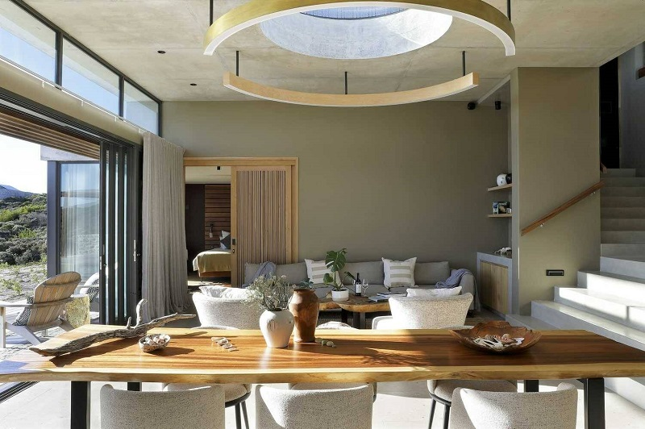
Sử dụng các nội thất đơn giản, ưu tiên công năng sử dụng (C: Internet)
Với sự đơn giản, tinh tế và hài hòa với thiên nhiên, phong cách kiến trúc Bắc Âu rất phổ biến trong các căn hộ, nhà phố, quán cà phê và homestay hiện đại. Không chỉ phù hợp với những không gian nhỏ cần tối ưu diện tích, phong cách này còn mang lại cảm giác thư thái, dễ chịu, giúp con người kết nối tốt hơn với thiên nhiên và tận hưởng cuộc sống một cách nhẹ nhàng, giản đơn.
Phong cách kiến trúc Địa Trung Hải (Mediterranean)
Phong cách kiến trúc Địa Trung Hải (Mediterranean) lấy cảm hứng từ những ngôi nhà ven biển của các quốc gia như Ý, Tây Ban Nha, Hy Lạp và miền nam nước Pháp. Đây là phong cách mang đậm hơi thở biển cả với thiết kế mở, màu sắc tươi sáng và vật liệu tự nhiên, tạo nên không gian sống phóng khoáng, thoáng đãng nhưng vẫn đầy chất nghệ thuật và sang trọng.
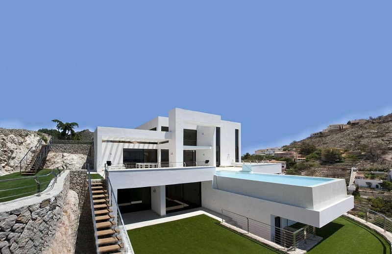
Phong cách Địa Trung Hải mang đậm hơi thở của biển cả (C: Internet)
Những đặc điểm của phong cách Địa Trung Hải:
- Thiết kế gần gũi với thiên nhiên: Kiến trúc Địa Trung Hải thường có thiết kế mở với những ô cửa rộng, cửa sổ lớn và ban công thoáng đãng để tận dụng tối đa ánh sáng tự nhiên và gió biển. Không gian bên trong và bên ngoài được kết nối một cách hài hòa, tạo cảm giác thư giãn và gần gũi với thiên nhiên.
- Sử dụng mái vòm: Một trong những đặc trưng dễ nhận thấy nhất của phong cách này là các mái vòm, từ cửa ra vào, cửa sổ cho đến lối đi trong nhà. Những đường nét cong mềm mại giúp không gian trở nên thanh thoát, nhẹ nhàng và mang đậm nét nghệ thuật.
- Màu sắc tươi sáng, lấy cảm hứng từ thiên nhiên: Bảng màu của kiến trúc Địa Trung Hải thường lấy cảm hứng từ biển cả, trời xanh và thiên nhiên. Những gam màu đặc trưng bao gồm trắng, xanh dương, vàng cát, nâu đất, xanh olive hoặc cam đất.
- Sử dụng vật liệu tự nhiên: Phong cách này thường sử dụng các vật liệu tự nhiên như đá, gỗ, gạch nung, gốm sứ và sắt rèn. Đặc biệt, sàn nhà thường được lát gạch bông hoặc đá cẩm thạch, mang đến cảm giác mộc mạc nhưng vẫn sang trọng.
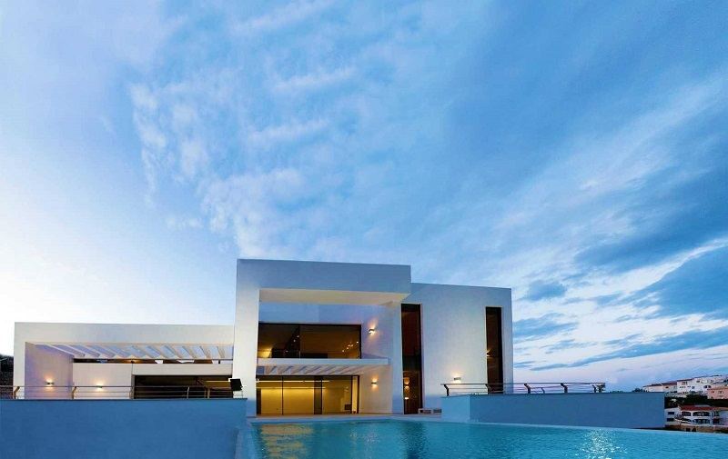
Việc sử dụng những gam màu tươi sáng giúp phong cách mang lại vẻ đẹp hài hòa với thiên nhiên (C: Internet)
Phong cách này rất phù hợp với các biệt thự nghỉ dưỡng, resort ven biển hoặc những ngôi nhà có sân vườn rộng rãi. Tuy nhiên, với một chút biến tấu, kiến trúc Địa Trung Hải vẫn có thể áp dụng cho nhà phố hoặc căn hộ hiện đại, mang đến không gian sống thư giãn như một kỳ nghỉ dài ngày.
Phong cách kiến trúc Công nghiệp (Industrial)
Phong cách kiến trúc Công nghiệp (Industrial) xuất hiện từ thế kỷ 19, lấy cảm hứng từ những nhà máy, xưởng sản xuất cũ ở châu Âu và Mỹ. Thay vì che giấu những khuyết điểm, phong cách này tôn vinh vẻ đẹp thô mộc của vật liệu xây dựng, tạo nên không gian mạnh mẽ, cá tính nhưng vẫn đầy tính thẩm mỹ.
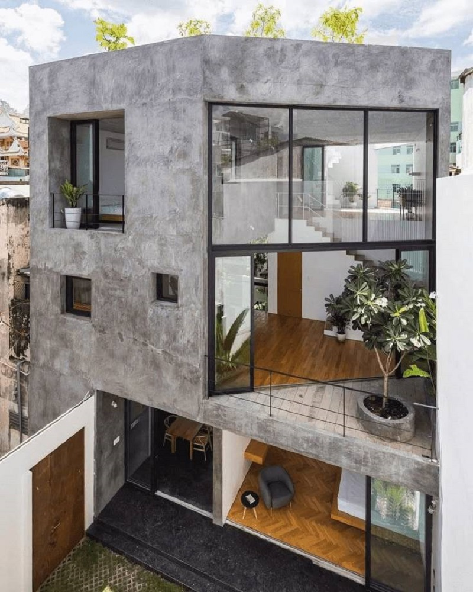
Mẫu nhà được xây dựng theo phong cách kiến trúc Công nghiệp (C: Internet)
Đặc điểm của phong cách kiến trúc Công nghiệp:
- Lộ kết cấu thô một cách có chủ đích: Điểm đặc trưng nổi bật nhất của phong cách Industrial là để lộ những yếu tố cấu trúc như tường gạch thô, bê tông, đường ống nước, hệ thống thông gió và dầm trần kim loại. Thay vì che đi, những chi tiết này lại trở thành điểm nhấn độc đáo, mang đến vẻ đẹp mạnh mẽ, chân thực và nguyên bản.
- Bảng màu thiên về tông trầm: Màu sắc trong phong cách này thường là những gam màu trầm, trung tính như đen, xám, nâu gỗ, xanh navy và trắng. Bảng màu này giúp tôn lên nét thô mộc của vật liệu, đồng thời tạo nên cảm giác mạnh mẽ và bí ẩn.
- Sử dụng vật liệu thô mộc: Các vật liệu chủ đạo bao gồm bê tông, gạch thô, kim loại, gỗ tái chế và kính. Bê tông và gạch thường được giữ nguyên trạng hoặc sơn nhẹ để tạo vẻ cũ kỹ, trong khi kim loại và gỗ mang đến sự cân bằng giữa lạnh và ấm.
- Không gian mở, tận dụng tối đa ánh sáng tự nhiên: Kiến trúc Industrial thường có không gian mở, trần cao, cửa sổ lớn và ít vách ngăn để tận dụng ánh sáng tự nhiên. Điều này giúp không gian trở nên rộng rãi, thoáng đãng và không bị bó hẹp.
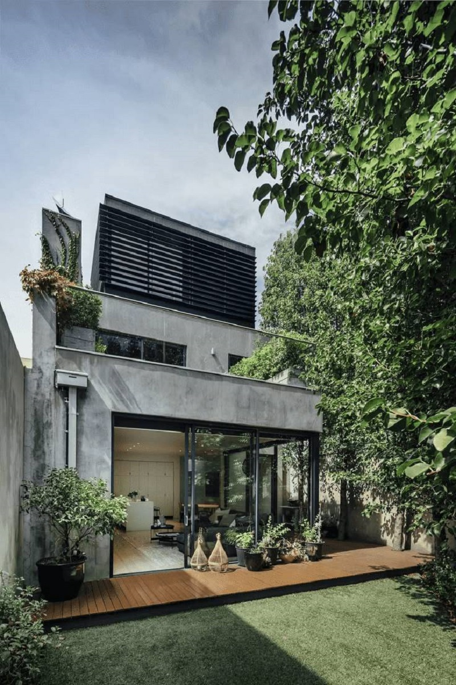
Phong cách Industrial có các ô cửa kính lớn giúp tận dụng ánh sáng tự nhiên (C: Internet)
Phong cách Industrial rất phổ biến trong các quán cà phê, nhà hàng, showroom, studio nghệ thuật và văn phòng sáng tạo. Tuy nhiên, với sự sáng tạo trong thiết kế, Industrial cũng có thể áp dụng cho nhà ở, căn hộ loft hoặc không gian làm việc tại nhà, mang đến một phong cách sống cá tính, phóng khoáng và đầy nghệ thuật.
Phong cách kiến trúc Tối giản (Minimalism)
Phong cách kiến trúc Tối giản (Minimalism) xuất hiện từ những năm 1960, lấy cảm hứng từ triết lý “Less is more” (Ít hơn nhưng chất hơn). Đây là phong cách tập trung vào sự đơn giản, loại bỏ mọi chi tiết thừa thãi để tôn vinh vẻ đẹp tinh tế của không gian, đường nét và ánh sáng.
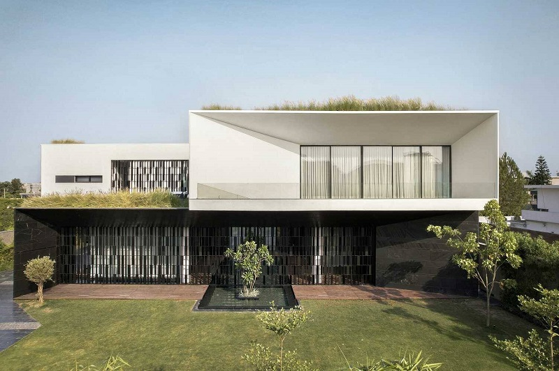
Phong cách này tập trung vào sự tối giản (C: Internet)
Những đặc điểm của phong cách kiến trúc Tối giản:
- Đơn giản nhưng tinh tế: Phong cách này hướng đến sự tối giản trong hình thức nhưng vẫn đảm bảo sự cân đối và hài hòa. Các công trình Minimalism thường có hình khối rõ ràng, bề mặt nhẵn mịn và ít chi tiết trang trí.
- Màu sắc trung tính, nhẹ nhàng: Minimalism thường sử dụng bảng màu trung tính như trắng, xám, be, đen hoặc các gam màu đất nhẹ nhàng. Những màu sắc này không chỉ tạo cảm giác thoáng đãng, rộng rãi mà còn giúp tôn lên vẻ đẹp của đường nét và vật liệu.
- Không gian thoáng đãng: Không gian trong phong cách Minimalism thường được thiết kế mở, tận dụng tối đa ánh sáng tự nhiên. Các bức tường ngăn được hạn chế, thay vào đó là cửa kính lớn hoặc cách bố trí nội thất thông minh để tạo sự liền mạch giữa các khu vực trong nhà.
- Hạn chế nội thất: Thay vì nhồi nhét quá nhiều đồ đạc, Minimalism chỉ giữ lại những món đồ thực sự cần thiết, nhưng mỗi món đều được chọn lọc kỹ lưỡng về thiết kế và chất lượng. Nội thất thường có kiểu dáng đơn giản, ít họa tiết nhưng được chế tác tinh tế, đảm bảo cả tính thẩm mỹ và công năng sử dụng.
- Vật liệu đơn giản nhưng cao cấp: Các công trình theo phong cách Tối giản thường sử dụng các vật liệu như gỗ, bê tông, kính và kim loại. Bề mặt vật liệu thường được giữ nguyên hoặc xử lý tối thiểu để giữ lại vẻ đẹp tự nhiên của nó.
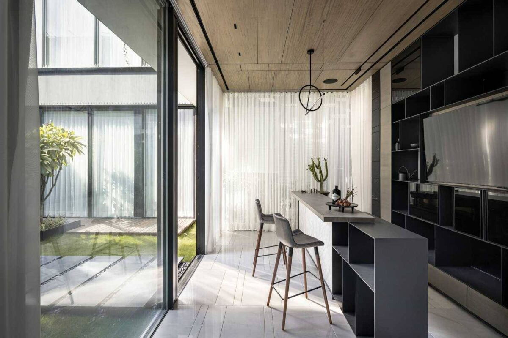
Phong cách kiến trúc tối giản có thiết kế không gian thoáng đãng và hạn chế nội thất tối đa (C: Internet)
Minimalist không chỉ phổ biến trong nhà ở, căn hộ mà còn được áp dụng rộng rãi trong thiết kế văn phòng, quán cà phê, studio sáng tạo và không gian nghệ thuật. Với ưu điểm tiết kiệm diện tích, dễ dàng vệ sinh và tạo cảm giác thư giãn, đây là phong cách lý tưởng cho những ai yêu thích sự gọn gàng, tinh tế và sống theo lối sống tối giản.
Phong cách kiến trúc Đông Dương (Indochine)
Phong cách kiến trúc Đông Dương (Indochine) là sự kết hợp hài hòa giữa kiến trúc phương Tây hiện đại và vẻ đẹp truyền thống của phương Đông, đặc biệt là Việt Nam, Lào, Campuchia. Xuất hiện từ thời kỳ Pháp thuộc, phong cách này vẫn giữ được sức hút mạnh mẽ nhờ sự sang trọng, tinh tế nhưng vẫn gần gũi và đậm bản sắc văn hóa.
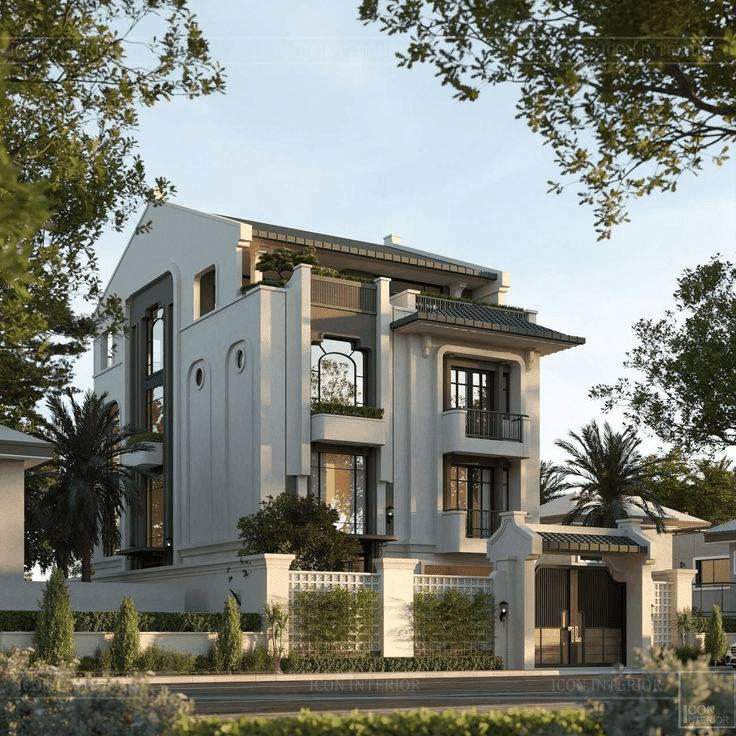
Ngôi biệt thự được xây dựng theo phong cách Đông Dương (C: Internet)
Những đặc điểm của phong cách Đông Dương:
- Hòa quyện giữa phương Đông và phương Tây: Kiến trúc Đông Dương là sự kết hợp của các yếu tố kiến trúc Pháp như mái vòm, cửa sổ lớn, ban công rộng với nét đặc trưng của kiến trúc Á Đông như mái ngói, họa tiết chạm khắc, nội thất gỗ và các hoa văn trang trí truyền thống. Sự pha trộn này tạo nên một không gian vừa sang trọng vừa hoài cổ.
- Màu sắc ấm áp, trang nhã: Phong cách này thường sử dụng các gam màu ấm như vàng, nâu, kem kết hợp với sắc xanh rêu, trắng hoặc đen để tạo sự cân bằng.
- Chất liệu tự nhiên, gần gũi: Kiến trúc Indochine ưu tiên các vật liệu tự nhiên như gỗ, gạch bông, gạch nung, tre, nứa và mây. Những vật liệu này không chỉ giúp không gian trở nên ấm áp, mộc mạc mà còn phản ánh tinh thần của kiến trúc truyền thống Việt Nam.
- Hoa văn và họa tiết mang đậm bản sắc Á Đông: Các công trình mang phong cách Đông Dương thường có những hoa văn trang trí lấy cảm hứng từ thiên nhiên như hoa sen, cúc, trúc hay các họa tiết hình học đối xứng. Những chi tiết này xuất hiện trên tường, sàn nhà, trần hoặc nội thất, tạo điểm nhấn tinh tế và nghệ thuật.
- Phù hợp với khí hậu nhiệt đới: Với đặc trưng khí hậu nóng ẩm của Đông Dương, phong cách này ưu tiên thiết kế trần cao, cửa sổ lớn, hiên rộng và hệ thống thông gió tự nhiên để đảm bảo không gian luôn thoáng mát.
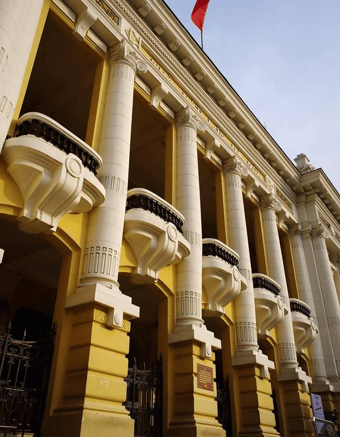
Nhà hát lớn Hà Nội là công trình kiến trúc ảnh hưởng đậm chất Đông Dương (C: Internet)
Ngày nay, phong cách Indochine được ứng dụng rộng rãi trong biệt thự, nhà hàng, quán cà phê, resort cao cấp và cả các căn hộ chung cư theo hướng hoài cổ. Với sự kết hợp giữa vẻ đẹp truyền thống và tiện nghi hiện đại, phong cách này không chỉ phù hợp với những ai yêu thích nét hoài niệm mà còn là lựa chọn lý tưởng cho những không gian sống thanh lịch, tinh tế và đậm chất nghệ thuật.
Phong cách kiến trúc Nhiệt đới (Tropical)
Phong cách kiến trúc Nhiệt đới (Tropical) là xu hướng thiết kế hòa mình vào thiên nhiên, tận dụng tối đa ánh sáng, gió và cây xanh để tạo nên không gian sống trong lành, thoáng mát. Phong cách này không chỉ phù hợp với các vùng có khí hậu nóng ẩm mà còn mang lại sự thư giãn, gần gũi với môi trường.
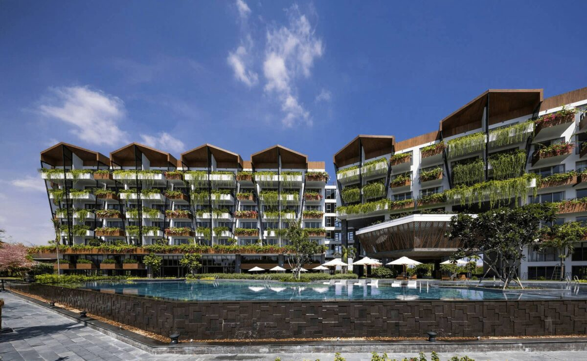
Phong cách kiến trúc Nhiệt đới hài hòa với thiên nhiên (C: Belleriver Resort – AVA Architects)
Những đặc điểm của phong cách Nhiệt đới:
- Thiết kế mở, kết nối thiên nhiên: Các công trình theo phong cách Nhiệt đới thường có cửa lớn, không gian mở, giúp đón gió và ánh sáng tự nhiên. Hệ thống hiên rộng, giếng trời và sân vườn là những yếu tố không thể thiếu, giúp giảm nhiệt và tăng sự thông thoáng.
- Chất liệu tự nhiên, thân thiện với môi trường: Gỗ, tre, đá, bê tông thô, kính và cây xanh là những vật liệu chủ đạo trong phong cách này. Chúng không chỉ tạo nên sự mộc mạc, gần gũi mà còn giúp tối ưu khả năng chống nóng, làm mát không gian sống.
- Cây xanh – “máy điều hòa” tự nhiên: Một điểm nhấn đặc biệt của kiến trúc Nhiệt đới chính là cây xanh được sử dụng xuyên suốt trong thiết kế. Từ tường cây, vườn trên mái, giếng trời xanh cho đến các hàng cây bao quanh, tất cả đều góp phần điều hòa không khí và mang đến cảm giác thư thái.
- Mái hiên rộng và hệ lam chắn nắng: Nhằm giảm thiểu tác động của ánh nắng gay gắt, các công trình theo phong cách Nhiệt đới thường có mái hiên rộng, hệ lam gỗ hoặc bê tông đục lỗ giúp tạo bóng râm mà vẫn đảm bảo sự thông thoáng.
- Bảng màu tươi sáng, mộc mạc: Màu sắc trong phong cách Nhiệt đới thường mang đến cảm giác mát mẻ và tự nhiên như trắng, be, xanh lá, nâu gỗ và xám bê tông. Những gam màu này không chỉ phản xạ nhiệt tốt mà còn tạo nên vẻ đẹp hài hòa, nhẹ nhàng cho không gian sống.
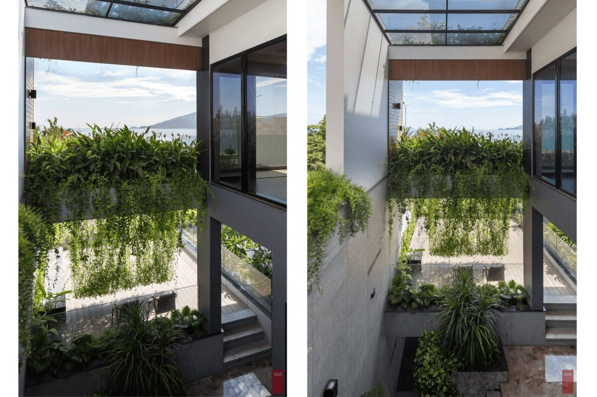
Việc tận dụng giếng trời, cây xanh và màu sắc tươi sáng mang lại cảm giác thoải mái (C: Belleriver Resort – AVA Architects)
Với khả năng thích nghi cao với khí hậu, phong cách Nhiệt đới thường được áp dụng trong biệt thự, resort nghỉ dưỡng, homestay, quán cà phê và nhà phố hiện đại. Đây là lựa chọn lý tưởng cho những ai yêu thích không gian xanh, gần gũi với thiên nhiên nhưng vẫn đảm bảo tính thẩm mỹ và tiện nghi.
Phong cách kiến trúc Bauhaus
Phong cách kiến trúc Bauhaus ra đời vào đầu thế kỷ 20 tại Đức, được xem là một trong những trường phái kiến trúc có ảnh hưởng lớn nhất đến kiến trúc hiện đại. Với triết lý “Form follows function” (Hình thức phục vụ chức năng), Bauhaus hướng đến sự tối giản, công năng tối ưu và tính thẩm mỹ tinh gọn, loại bỏ hoàn toàn những chi tiết trang trí cầu kỳ.
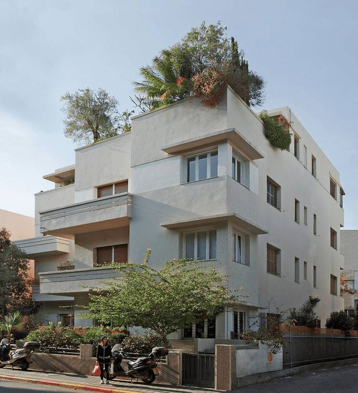
Phong cách Bauhaus ra đời vào đầu thế kỷ 20 (C: Internet)
- Thiết kế tối giản, đường nét mạnh mẽ: Phong cách Bauhaus đề cao sự đơn giản trong bố cục, với hình khối cơ bản như hình vuông, chữ nhật, khối hộp và đường thẳng dứt khoát. Tất cả các chi tiết đều có mục đích rõ ràng, không có yếu tố trang trí dư thừa.
- Công năng là ưu tiên hàng đầu: Mọi thiết kế trong phong cách Bauhaus đều phục vụ công năng sử dụng. Không có chi tiết nào chỉ để trang trí mà không có mục đích thực tế. Điều này giúp tối ưu không gian sống, tăng tính tiện nghi và hiệu suất sử dụng.
- Sử dụng vật liệu công nghiệp hiện đại: Các công trình Bauhaus thường sử dụng kính, thép, bê tông, nhôm và gỗ công nghiệp – những vật liệu phổ biến trong ngành xây dựng hiện đại, giúp công trình bền vững và tối giản chi phí.
- Không gian mở, tối ưu ánh sáng tự nhiên: Bauhaus ưu tiên thiết kế không gian mở, với cửa sổ lớn, vách kính và giếng trời nhằm tận dụng ánh sáng tự nhiên, tạo sự thông thoáng và kết nối với môi trường xung quanh.
- Bảng màu trung tính, hài hòa: Màu sắc trong phong cách Bauhaus thường xoay quanh những gam màu trung tính như trắng, xám, đen, kết hợp với các điểm nhấn từ màu đỏ, xanh dương hoặc vàng để tạo nên sự sinh động nhưng vẫn tinh tế.
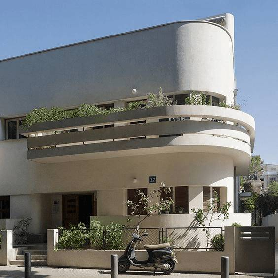
Phong cách Bauhaus đề cao sự tối giản (C: Internet)
Với sự tối giản và công năng linh hoạt, Bauhaus trở thành phong cách lý tưởng cho nhà phố, căn hộ, biệt thự hiện đại, văn phòng và các công trình công cộng. Ngày nay, triết lý của Bauhaus vẫn là nền tảng quan trọng trong kiến trúc và thiết kế nội thất đương đại.
Phong cách kiến trúc Quiet Luxury
Phong cách kiến trúc Quiet Luxury không phô trương hào nhoáng mà tập trung vào sự tinh tế, tối giản và đẳng cấp vượt thời gian. Đây là xu hướng đang lên trong giới thượng lưu, đề cao sự tinh giản trong thiết kế nhưng lại cực kỳ tỉ mỉ trong chất liệu, ánh sáng và không gian sống.
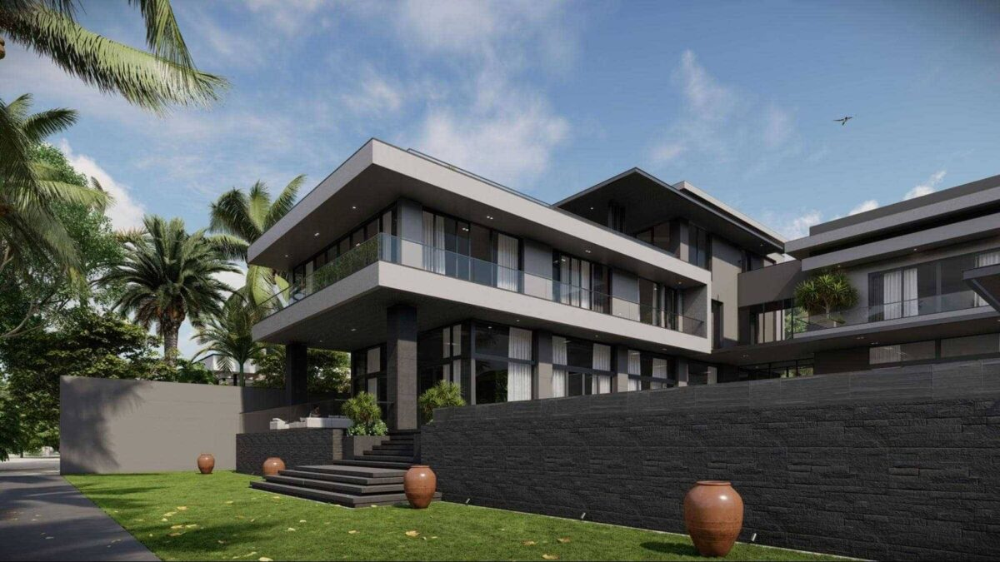
Phong cách Quiet Luxury tập trung vào sự tối giản (C: Villa J1 – The Ocean Villas – AVA Architects)
- Tối giản nhưng không đơn điệu: Khác với sự cầu kỳ của phong cách cổ điển hay sự tối giản cực đoan của Minimalism, Quiet Luxury tạo nên cảm giác sang trọng qua bố cục không gian tinh gọn, đường nét thanh thoát và tỷ lệ hoàn hảo. Mọi chi tiết đều có sự tính toán kỹ lưỡng để mang lại trải nghiệm sống đẳng cấp.
- Chất liệu cao cấp, bền vững: Phong cách này chuộng những vật liệu tự nhiên và thủ công, có giá trị lâu dài như đá cẩm thạch, gỗ óc chó, linen, cashmere, kim loại mạ tinh tế. Từng bề mặt đều được chăm chút để tạo cảm giác chạm vào là đủ thấy sự xa xỉ.
- Bảng màu trung tính, thanh lịch: Gam màu chủ đạo của Quiet Luxury thường là trắng, be, xám, nâu, xanh rêu, hoặc các tông đất nhẹ nhàng. Những sắc thái này giúp không gian trở nên sang trọng nhưng vẫn gần gũi, mang lại cảm giác thư thái và cân bằng.
- Thiết kế ánh sáng tinh tế: Ánh sáng là một trong những yếu tố quan trọng, giúp tôn lên vẻ đẹp của vật liệu và không gian. Quiet Luxury ưu tiên ánh sáng tự nhiên kết hợp với hệ thống đèn gián tiếp, đèn hắt trần để tạo chiều sâu và sự ấm áp.
- Nội thất chất lượng: Nội thất theo phong cách Quiet Luxury không chạy theo xu hướng mà chú trọng vào sự bền vững và tính cá nhân hóa. Những món đồ được thiết kế riêng hoặc đến từ các thương hiệu thủ công danh tiếng, có giá trị lâu dài cả về thẩm mỹ lẫn chất lượng.
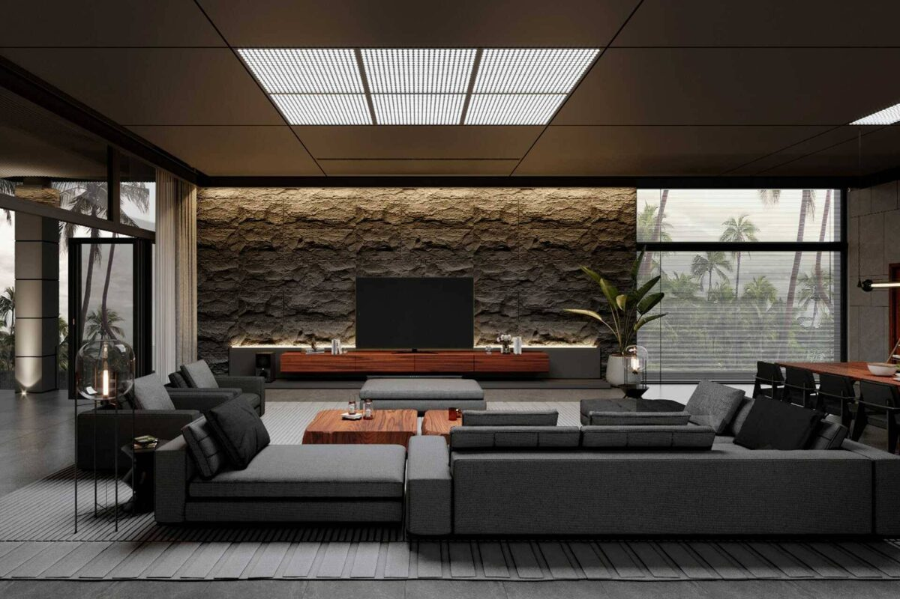
Không gian nội thất bên trong của dự án Ocean Pearl J1 được thiết kế theo phong cách Quiet Luxury (C: Villa J1 – The Ocean Villas – AVA Architects)
Với sự sang trọng tinh tế nhưng không phô trương, phong cách này phù hợp cho biệt thự, căn hộ cao cấp, khách sạn boutique, resort nghỉ dưỡng và không gian sống của giới thượng lưu. Quiet Luxury không chỉ là một phong cách kiến trúc mà còn là tuyên ngôn về một lối sống đẳng cấp, đề cao chất lượng hơn số lượng.
Nên lựa chọn phong cách kiến trúc nào?
Việc lựa chọn phong cách kiến trúc phù hợp không chỉ giúp ngôi nhà trở nên thẩm mỹ mà còn ảnh hưởng đến sự tiện nghi, công năng sử dụng và phong cách sống của chủ sở hữu. Để đưa ra quyết định đúng đắn, bạn cần cân nhắc nhiều yếu tố khác nhau.
Trước tiên, sở thích cá nhân là điều quan trọng nhất. Nếu bạn yêu thích sự sang trọng, bề thế và muốn không gian sống mang vẻ đẹp cổ điển vượt thời gian, phong cách Cổ điển hoặc Tân cổ điển sẽ là lựa chọn hoàn hảo. Ngược lại, nếu bạn là người năng động, yêu thích sự hiện đại và đề cao công năng sử dụng, phong cách Hiện đại hoặc Tối giản sẽ giúp không gian trở nên thoáng đãng, tiện nghi. Những ai thích sự ấm cúng, gần gũi thiên nhiên có thể chọn phong cách Bắc Âu hoặc Địa Trung Hải, trong khi phong cách Công nghiệp lại phù hợp với những người cá tính, mạnh mẽ, thích không gian phá cách.
Bên cạnh sở thích, bạn cũng cần cân nhắc đến diện tích và công năng sử dụng. Với nhà phố hoặc căn hộ chung cư có diện tích nhỏ, phong cách Hiện đại, Tối giản hay Bắc Âu sẽ giúp tối ưu không gian và tạo cảm giác rộng rãi hơn. Đối với những căn biệt thự hoặc nhà có diện tích lớn, phong cách Cổ điển, Tân cổ điển hay Đông Dương sẽ giúp ngôi nhà trở nên bề thế, sang trọng hơn.
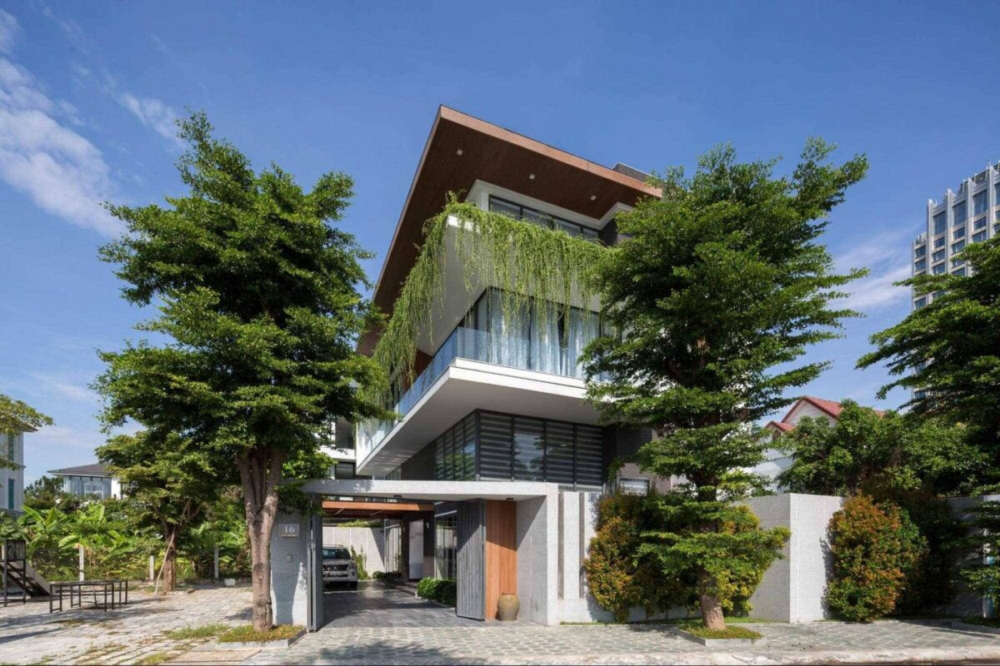
Mỗi phong cách kiến trúc sẽ có những ưu – nhược điểm riêng biệt (C: Can’s Villa – AVA Architects)
Yếu tố khí hậu và môi trường sống cũng đóng vai trò quan trọng. Ví dụ, ở vùng khí hậu nhiệt đới như Việt Nam, phong cách Đông Dương rất được ưa chuộng nhờ khả năng thích nghi tốt, giúp không gian thoáng mát và tận dụng tối đa ánh sáng tự nhiên. Nếu bạn sống ở thành phố với nhịp sống nhanh, phong cách Hiện đại, Công nghiệp hoặc Tối giản sẽ phù hợp hơn vì dễ bảo trì, dọn dẹp và có thiết kế tối ưu cho cuộc sống hiện đại.
Cuối cùng, ngân sách là yếu tố không thể bỏ qua. Nếu bạn có ngân sách lớn và muốn đầu tư vào một công trình xa hoa, phong cách Cổ điển hoặc Tân cổ điển là lựa chọn lý tưởng. Trong khi đó, những phong cách như Hiện đại, Bắc Âu hay Địa Trung Hải có chi phí trung bình nhưng vẫn đảm bảo tính thẩm mỹ và tiện nghi. Với ngân sách hạn chế, phong cách Tối giản hoặc Công nghiệp sẽ giúp tối ưu chi phí mà vẫn tạo ra không gian sống ấn tượng.
Nhìn chung, không có phong cách nào là “tốt nhất”, mà quan trọng là phong cách đó có phù hợp với nhu cầu, sở thích và điều kiện thực tế của bạn hay không. Vì vậy, hãy cân nhắc kỹ lưỡng hoặc tham khảo ý kiến chuyên gia để có lựa chọn tối ưu nhất cho không gian sống của mình.
Phong cách kiến trúc không chỉ định hình vẻ đẹp của một công trình mà còn phản ánh gu thẩm mỹ, cá tính và phong cách sống của chủ sở hữu. Việc lựa chọn phong cách phù hợp sẽ giúp không gian sống trở nên hài hòa, tiện nghi và thể hiện rõ dấu ấn cá nhân. Nếu bạn đang tìm kiếm một đơn vị thiết kế, thi công chuyên nghiệp để hiện thực hóa ý tưởng của mình, AVA Architects sẽ là người đồng hành đáng tin cậy. Hãy liên hệ ngay với AVA Architects để được tư vấn và mang đến không gian sống lý tưởng, đậm dấu ấn riêng!
- Market Analyst
- Mỹ Vân là Chuyên viên Phân tích Thị trường, đảm nhận vai trò nghiên cứu và phân tích chuyên sâu các xu hướng của ngành kiến trúc, loại hình dự án và thị trường bất động sản cho AVA Architects. Vân đã và đang hỗ trợ AVA Architects liên tục đổi mới và đưa ra quyết định chiến lược chính xác, đồng thời cung cấp cho khách hàng những góc nhìn giá trị để đưa ra lựa chọn đầu tư hiệu quả nhất. Tất cả đều hướng tới mục tiêu củng cố vị thế tiên phong của AVA và cùng khách hàng kiến tạo nên những giá trị bền vững cho tương lai.
 Blog thiết kế AVA14/09/202699+ Mẫu biệt thự phố đẹp, hiện đại, xu hướng năm 2026
Blog thiết kế AVA14/09/202699+ Mẫu biệt thự phố đẹp, hiện đại, xu hướng năm 2026 Blog thiết kế AVA10/09/2026999+ mẫu biệt thự đẹp đẳng cấp, sang trọng nhất 2026
Blog thiết kế AVA10/09/2026999+ mẫu biệt thự đẹp đẳng cấp, sang trọng nhất 2026 Blog thiết kế AVA09/09/2026Mẫu biệt thự hiện đại sang trọng, hiện đại 2026
Blog thiết kế AVA09/09/2026Mẫu biệt thự hiện đại sang trọng, hiện đại 2026 Blog thi công AVA28/04/2026Lợi ích khi xây nhà trọn gói bạn nhất định phải biết
Blog thi công AVA28/04/2026Lợi ích khi xây nhà trọn gói bạn nhất định phải biết